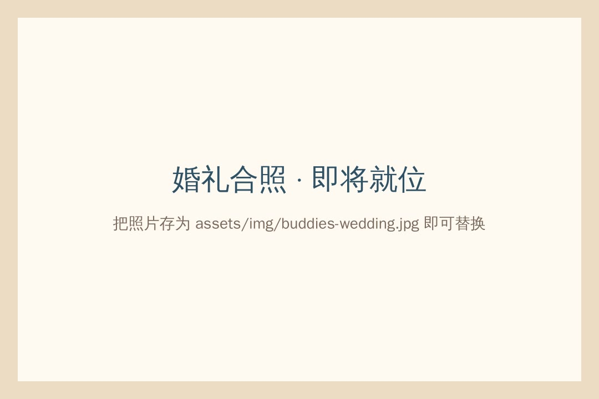

第一章 · 童年
小时候赤脚跑过，
小时候赤脚跑过，
海风吹过咸咸的温度。
你讲"走去玩咯"，我讲"steady"——一句话就是一整个下午的约定。 骑着脚车白天到日落，链条掉了就两个人挤一辆； 偷偷去抓鱼，回家被阿母骂够够，骂完还是留一碗饭给你。
以前什么都没有，快乐却特别多。

从巴冬渔村 · MUAR · 一起长大
一世人的兄弟 · 这是我们的歌
你讲"走去玩咯"，我讲"steady"——一句话就是一整个下午的约定。 骑着脚车白天到日落，链条掉了就两个人挤一辆； 偷偷去抓鱼，回家被阿母骂够够，骂完还是留一碗饭给你。
以前什么都没有，快乐却特别多。
群里可以安静一个礼拜，但只要有人丢出一句"走咯"，五分钟内全员冒出来。 打几玩 game 吹水到半夜，老地方 kopitiam Lim Teh 又聊一整夜—— 聊的还是那几件事：谁骑脚车冲进沟渠、谁抓鱼抓到水蛇吓到哭。 讲了几百遍，每一遍还是有人笑到拍桌子。
临走前照例那句："下个礼拜，照旧？"——照旧。

当老板的抢着买单，被按回椅子上："在这里没有老板，只有兄弟。" 在 KL 做工的被笑有 KL 腔，他用最地道的巴冬福建话回敬一句，全场笑翻。 孩子们在旁边追来追去，就像当年的我们。
虽然大家越来越忙，但每次聚在一起，还是像从前。

赤脚的沙滩、脚车、抓鱼，和骂够够的阿母。
有人去 KL，有人接家里的生意，有人去了更远的地方。
有人结婚了——婚礼那天，这班人一个都没缺席。
带着家人和孩子回来，坐下来还是这班兄弟。
等到大家头发变白，回到巴冬再相聚——还是那句。
歌词跟着歌走，点任何一句可以跳到那里。
等到以后大家头发变白，回到巴冬再相聚，还是那句——
"Bro～ 今晚去哪里？"
在 WhatsApp 丢一句"走咯"© 2026 Hometown Buddy · 从巴冬渔村一起长大的友谊 · 兄弟情没过期